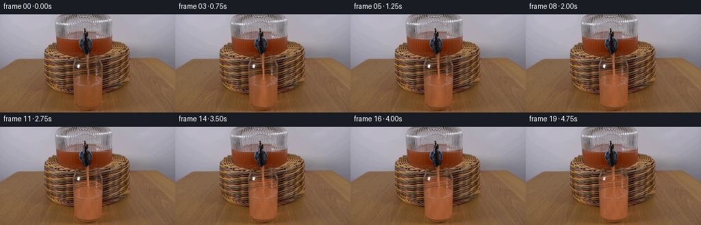
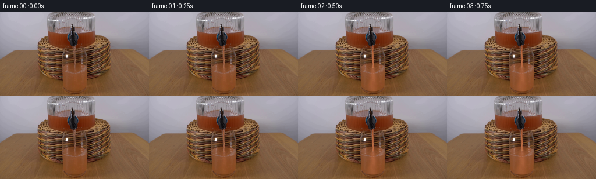

CODING AGENTS AS PIXEL WORLD MODELS
traex/GPT-6.1-Sol · 0071
点击播放 · 原生 RGB 像素
逐轮保存的候选
回放视频、检查图与代码变化。
每份候选均可单独播放。实际图片检查记录在下方工具轨迹中。
候选 01播放与检查图
点击播放 · 原生 RGB 像素
展开代码变化
--- 上一保存版本
+++ 本次保存版本
@@ -0,0 +1,142 @@
+from pathlib import Path
+import numpy as np
+from PIL import Image
+from scipy.ndimage import gaussian_filter, map_coordinates
+import artifact_io
+
+ROOT = Path(__file__).resolve().parent
+S = 4
+H,W = 144,256
+base = np.array(Image.open(ROOT/'first_frame.png').convert('RGB'), dtype=np.uint8)
+# Work at subpixel resolution, without moving the camera or the solid apparatus.
+Y,X = np.mgrid[0:H*S,0:W*S].astype(np.float32)
+X=(X+.5)/S-.5; Y=(Y+.5)/S-.5
+hi = np.stack([map_coordinates(base[:,:,k].astype(np.float32),[Y,X],order=1,mode='nearest') for k in range(3)],-1)
+smooth0=gaussian_filter(base.astype(np.float32),(1.15,1.15,0))
+blur=np.stack([map_coordinates(smooth0[:,:,k],[Y,X],order=1,mode='nearest') for k in range(3)],-1)
+highpass=hi-blur
+
+def smooth(a,b,z):
+ u=np.clip((z-a)/(b-a),0,1)
+ return u*u*(3-2*u)
+
+def compose(im,col,a):
+ a=np.clip(a,0,1)[...,None]
+ return im*(1-a)+col*a
+
+# The tumbler is the narrow transparent cylinder immediately beneath the nozzle.
+cx=128.1
+bottom=129.0
+left=107.4+.016*np.clip(Y-66,0,65)
+right=149.8-.027*np.clip(Y-66,0,65)
+edge=smooth(0,1.05,X-left)*smooth(0,1.05,right-X)
+xb=(X-cx)/20.0
+bottomline=bottom+7.4*np.sqrt(np.maximum(0,1-xb*xb))
+inside=edge*smooth(0,.85,bottomline-Y)*smooth(64,66,Y)
+# A stable remnant of the photographed cylinder's narrow specular reflections.
+glass_shine=(np.exp(-((X-108.2)/.68)**2)*.28 +
+ np.exp(-((X-148.9)/.72)**2)*.36 +
+ np.exp(-((X-128.1)/.8)**2)*.09)
+
+def render(index):
+ if index==0: return base.copy()
+ t=index/4
+ age=max(0,t-.05)
+ flow=smooth(0,.34,age)
+ # Conservation of volume: a thin spigot jet steadily adds to the initial water.
+ added=4.55*max(0,age-.10)
+ level=97.0-added
+ rx=20.2+.006*(97-level)
+ ry=7.35
+ u=(X-cx)/rx
+ q=np.sqrt(np.clip(1-u*u,0,1))
+ smallwaves=(.18*np.sin((X-cx)*.44-9*t)+.11*np.sin((X-cx)*.87+7.7*t))*q*flow
+ back=level-ry*q+smallwaves
+ front=level+ry*q+smallwaves
+ wet=inside*smooth(-.22,.65,Y-back)
+ surf=inside*(1-smooth(-.22,.7,Y-front))*smooth(-.22,.65,Y-back)
+ # Turbulent jet entrains clear water. The warm plume widens toward the bottom,
+ # then mixes into the remainder of the liquid, not a separate falling solid.
+ depth=np.maximum(0,Y-level)
+ center=128.1+1.2*np.sin(depth*.20-3.4*t)*smooth(0,24,depth)
+ sigma=1.8+depth*.11+age*1.9
+ column=np.exp(-((X-center)/sigma)**2)
+ entrain=smooth(0,.45,age)*smooth(-5,5,Y-level)
+ spreading=smooth(.1,3.5,age)
+ curl=(np.sin(X*.34+Y*.20-2.6*t)+.55*np.sin(X*.64-Y*.29+3.1*t))
+ initial_volume=35.0
+ cavg=added/(initial_volume+added)
+ conc=np.clip(cavg*.93 + .58*column*entrain*np.exp(-depth/76)*(1-.46*spreading)
+ + .035*curl*spreading,0,.83)
+ # Grapefruit juice is translucent at first and increasingly turbid when mixed.
+ opacity=(1-np.exp(-2.35*conc))*wet*flow
+ # Retain photographed glass/refraction texture, with soft moving eddies.
+ dx=.40*np.sin(.18*Y+2.5*t)*conc
+ dy=.32*np.sin(.26*X-2.8*t)*conc
+ refr=np.stack([map_coordinates(smooth0[:,:,k], [Y+dy,X+dx],order=1,mode='nearest') for k in range(3)],-1)
+ light=np.clip((refr.mean(2)-82)*.23,-13,15)
+ path=np.sqrt(np.clip(1-u*u,0,1))
+ juice=np.stack([177+light+3.0*curl,100+light+2.1*curl,62+light+1.4*curl],-1)
+ juice += highpass*.45
+ juice -= (1-path)[...,None]*np.array([13,12,9])
+ im=compose(hi,juice,opacity*(1-np.minimum(.75,glass_shine)))
+ # The visible top of the liquid is a shallow perspective ellipse.
+ surface_light=.55+.45*q
+ surface_color=np.stack([169+light+1.8*curl,104+light+1.2*curl,72+light+.8*curl],-1)
+ im=compose(im,surface_color,surf*(.075+.22*cavg)*flow*surface_light)
+ # Traveling concentric disturbances around the point where the stream lands.
+ rho=np.sqrt(((X-128.2)/1.0)**2+((Y-level)/.34)**2)
+ ripples=(np.sin(rho*1.17-11.5*t)*np.exp(-rho/13))
+ im += (surf*flow*.90*ripples)[...,None]*np.array([7.5,7.0,5.4])
+ # Meniscus, with a soft amber lower edge and a thin highlight above it.
+ boundary=np.exp(-((Y-front)/.40)**2)*inside*flow
+ im=compose(im,np.array([109,62,34],np.float32),boundary*(.08+.25*cavg))
+ shine=np.exp(-((Y-back+.08)/.28)**2)*inside*flow
+ im=compose(im,np.array([208,159,117],np.float32),shine*(.05+.13*cavg))
+ # A continuously falling tapered, optically shaded liquid thread.
+ dist=np.maximum(0,Y-56.8)
+ jetx=127.9+.022*dist+.17*np.sin(dist*.37-8.8*t)*smooth(0,14,dist)
+ jetwidth=(2.35/np.sqrt(1+dist*.017))*(.95+.065*np.sin(dist*.78-15.2*t))*flow
+ jt=np.abs(X-jetx)/(jetwidth*.5+1e-4)
+ jet=smooth(1.40,.60,jt)*smooth(56.3,57.0,Y)*(1-smooth(level-.2,level+.65,Y))*flow
+ # Partial short initial opening, and soft occlusion under the nozzle lip.
+ lightjet=1.0-np.clip(jt,0,1)
+ streak=np.exp(-((X-jetx+.34)/.22)**2)
+ jetcol=np.stack([139+42*smooth(57,77,Y)+18*lightjet+22*streak,
+ 63+35*smooth(57,77,Y)+10*lightjet+23*streak,
+ 27+29*smooth(57,77,Y)+7*lightjet+21*streak],-1)
+ jetcol += (2.4*np.sin(dist*.95-23*t))[...,None]
+ # The cup rim's glass reflection passes in front of the thread.
+ jet *= 1-.12*np.exp(-((Y-65.5)/1.0)**2)
+ im=compose(im,jetcol,jet*.86)
+ # Small aerated impact spot, bubbles, and a restrained splash contained by glass.
+ impact=np.exp(-((X-(127.9+.022*(level-56.8)))/2.0)**2-((Y-level)/.72)**2)*inside*flow
+ im=compose(im,np.array([202,147,106],np.float32),impact*.29)
+ for n in range(7):
+ phase=(age*(1.05+.09*n)+n*.371)%1
+ bx=128.4+(3.7+1.1*n)*np.sin(n*2.41+age*.58)
+ by=level+4.0*(1-phase)+.35*np.sin(age*8+n)
+ rr=.24+.11*(n%3)
+ d=np.sqrt((X-bx)**2+((Y-by)/.72)**2)
+ bubble=np.exp(-((d-rr)/.15)**2)*wet*flow*(.15+.20*cavg)
+ im=compose(im,np.array([203,155,111],np.float32),bubble)
+ # Small decline of the reservoir surface relative to its much wider cross-section.
+ # Keep reflections and the dark tap completely fixed.
+ reservoir_drop=added*.071
+ liquidline=35.5+reservoir_drop
+ reserve_area=smooth(84,88,X)*(1-smooth(160,164,X))
+ metal=(1-smooth(113,116,X)) + smooth(137,140,X)
+ reserve_area*=np.clip(metal,0,1)
+ vacated=smooth(35.25,35.7,Y)*(1-smooth(liquidline-.2,liquidline+.3,Y))*reserve_area
+ glass_above=np.stack([map_coordinates(base[:,:,k].astype(np.float32),[Y-reservoir_drop-2.0,X],order=1,mode='nearest') for k in range(3)],-1)
+ im=compose(im,glass_above,vacated*.54)
+ # Only composite changed subpixels; original scene is pixel-stable elsewhere.
+ lo=np.clip(im,0,255).reshape(H,S,W,S,3).mean((1,3))
+ origlo=hi.reshape(H,S,W,S,3).mean((1,3))
+ return np.clip(base.astype(np.float32)+(lo-origlo),0,255).round().astype(np.uint8)
+
+frames=np.stack([render(i) for i in range(20)])
+artifact_io.save(frames,ROOT)
+if __name__=='__main__':
+ assert np.array_equal(frames[0],base)
+ print('Saved',frames.shape,frames.dtype)
候选 02播放与检查图
点击播放 · 原生 RGB 像素


展开代码变化
--- 上一保存版本
+++ 本次保存版本
@@ -37,6 +37,7 @@
glass_shine=(np.exp(-((X-108.2)/.68)**2)*.28 +
np.exp(-((X-148.9)/.72)**2)*.36 +
np.exp(-((X-128.1)/.8)**2)*.09)
+glass_shine += .66*smooth(112,180,hi.mean(2))*(1-smooth(16,38,hi[:,:,0]-hi[:,:,2]))
def render(index):
if index==0: return base.copy()
@@ -112,6 +113,12 @@
# Small aerated impact spot, bubbles, and a restrained splash contained by glass.
impact=np.exp(-((X-(127.9+.022*(level-56.8)))/2.0)**2-((Y-level)/.72)**2)*inside*flow
im=compose(im,np.array([202,147,106],np.float32),impact*.29)
+ for n in range(3):
+ ph=(age*2.1+n*.337)%1
+ sx=128.2+(-1 if n%2 else 1)*(1.1+ph*2.2)
+ sy=level-1.1*np.sin(np.pi*ph)
+ droplet=np.exp(-((X-sx)/.27)**2-((Y-sy)/.34)**2)*inside*flow
+ im=compose(im,np.array([194,143,100],np.float32),droplet*.24)
for n in range(7):
phase=(age*(1.05+.09*n)+n*.371)%1
bx=128.4+(3.7+1.1*n)*np.sin(n*2.41+age*.58)
可观测工具轨迹
实际执行的命令与返回图片。
命令 1exit 0
/bin/bash -lc "ls -la && cat prompt.txt && printf '\\n---RULES---\\n' && cat GENERATION_RULES.md"
命令 2exit 0
/bin/bash -lc "cat artifact_io.py && python - <<'PY'
from PIL import Image
import numpy as np
im=np.array(Image.open('first_frame.png').convert('RGB')); print(im.shape)
# colored quantized chars, dark contrast etc
from collections import Counter
print(Counter(map(tuple,(im//32*32).reshape(-1,3))).most_common(20))
# ascii grayscale
s=Image.fromarray(im).resize((100,45)); a=np.array(s); gray=a.mean(2)
chars='@%#*+=-:. '
for r in gray:
print(''.join(chars[min(9,int(x/256*10))] for x in r))
PY"命令 3exit 0
/bin/bash -lc "python - <<'PY'
import numpy as np
from PIL import Image
im=np.array(Image.open('first_frame.png'))
# brightness characters with coordinates 128x72
im=np.array(Image.fromarray(im).resize((128,72)))
print(' '+''.join(str(i//10%10) for i in range(128)))
print(' '+''.join(str(i%10) for i in range(128)))
for y,r in enumerate(im):
print(f'{y*2:3d}: '+''.join(' .,:;irsXAhHM#9B&@'[min(16,int(v/256*17))] for v in r.mean(1)))
print('\\nRGB avg sample grid central bottom:')
a=np.array(Image.open('first_frame.png'))
for y in range(60,144,4):
print(y, ' '.join(f'{x}:{tuple(a[y:y+2,x:x+2].mean((0,1)).astype(int))}' for x in range(96,170,4)))
PY"命令 4exit 0
/bin/bash -lc "python - <<'PY'
from PIL import Image
import numpy as np
from scipy.ndimage import gaussian_filter
im=np.array(Image.open('first_frame.png')).astype(float)
for label,val in [('Luma',im.mean(2)),('Red',im[:,:,0]),('Neutral', np.clip(1-(im[:,:,0]-im[:,:,2])/90,0,1)*255),('edge',np.hypot(*np.gradient(gaussian_filter(im.mean(2),.6)))*7)]:
print('\\n',label,'x 90:160')
print(' '+''.join(str(x//10%10) for x in range(90,161)))
print(' '+''.join(str(x%10) for x in range(90,161)))
for y in range(64,142):
print(f'{y:3d}: '+''.join(' .,:;irsXAhHM#9B&@'[min(16,max(0,int(v/256*17)))] for v in val[y,90:161]))
PY"命令 5exit 0
/bin/bash -lc "python - <<'PY'
from PIL import Image
import numpy as np
im=np.array(Image.open('first_frame.png')).astype(float)
# neutral/color classes fine resolution
# dark neutral d, silver C, highlight W; orange r
for y in range(15,111):
row=''
for x in range(80,165):
r,g,b=im[y,x]; v=(r+g+b)/3
if r-b<12:
c='W' if v>190 else 'O' if v>150 else 'o' if v>110 else '+' if v>75 else '-' if v>40 else '.'
elif r-b<30:
c='c' if v>150 else ':' if v>80 else ',' if v>45 else '.'
elif r-b<55:
c='Y' if v>145 else 'y' if v>110 else 't' if v>80 else 'r' if v>50 else '.'
else:
c='A' if v>135 else 'a' if v>100 else 's' if v>75 else 'x' if v>50 else 'd'
row+=c
print(f'{y:3} '+row)
print(' '+''.join(str(x//10%10) for x in range(80,165)));print(' '+''.join(str(x%10) for x in range(80,165)))
PY"命令 6exit 0
/bin/bash -lc "python - <<'PY'
from PIL import Image
import numpy as np
from scipy.ndimage import gaussian_filter
im=np.array(Image.open('first_frame.png')).astype(float)
for x in (102,104,106,108,112,116,124,128,136,140,146,149,151,153):
print('X',x)
for y in range(54,141,2):
r,g,b=im[y,x].astype(int)
print(f'{y}: {r},{g},{b}',end=' | ')
print()
# gradient x and y aggregated on cup
print('Gradient by row interior');gray=im.mean(2); sm=gaussian_filter(gray,.7)
for y in range(55,142):
print(y,round(abs(sm[y+1,106:150]-sm[y-1,106:150]).mean(),1),round(gray[y,106:150].mean(),1))
PY"命令 7exit 0
/bin/bash -lc "python - <<'PY'
from PIL import Image
import numpy as np
im=np.array(Image.open('first_frame.png')); print('metal lower area luma x110..138')
chars=' .:-=+*#%@'
print(' '+''.join(str(i//10%10) for i in range(110,139)));print(' '+''.join(str(i%10) for i in range(110,139)))
for y in range(18,70):
print(f'{y:3d}: '+''.join(chars[min(9,int(v/256*10))] for v in im[y,110:139].mean(1)))
print('cup edges high-luma at x99 to155, y57 to95')
for y in range(57,96):
print(f'{y:3d}: '+''.join(chars[min(9,int(v/256*10))] for v in im[y,99:156].mean(1)))
PY"命令 8exit 0
/bin/bash -lc "cat > generate.py <<'PY'
from pathlib import Path
import numpy as np
from PIL import Image
from scipy.ndimage import gaussian_filter, map_coordinates
import artifact_io
ROOT = Path(__file__).resolve().parent
S = 4
H,W = 144,256
base = np.array(Image.open(ROOT/'first_frame.png').convert('RGB'), dtype=np.uint8)
# Work at subpixel resolution, without moving the camera or the solid apparatus.
Y,X = np.mgrid[0:H*S,0:W*S].astype(np.float32)
X=(X+.5)/S-.5; Y=(Y+.5)/S-.5
hi = np.stack([map_coordinates(base[:,:,k].astype(np.float32),[Y,X],order=1,mode='nearest') for k in range(3)],-1)
smooth0=gaussian_filter(base.astype(np.float32),(1.15,1.15,0))
blur=np.stack([map_coordinates(smooth0[:,:,k],[Y,X],order=1,mode='nearest') for k in range(3)],-1)
highpass=hi-blur
def smooth(a,b,z):
u=np.clip((z-a)/(b-a),0,1)
return u*u*(3-2*u)
def compose(im,col,a):
a=np.clip(a,0,1)[...,None]
return im*(1-a)+col*a
# The tumbler is the narrow transparent cylinder immediately beneath the nozzle.
cx=128.1
bottom=129.0
left=107.4+.016*np.clip(Y-66,0,65)
right=149.8-.027*np.clip(Y-66,0,65)
edge=smooth(0,1.05,X-left)*smooth(0,1.05,right-X)
xb=(X-cx)/20.0
bottomline=bottom+7.4*np.sqrt(np.maximum(0,1-xb*xb))
inside=edge*smooth(0,.85,bottomline-Y)*smooth(64,66,Y)
# A stable remnant of the photographed cylinder's narrow specular reflections.
glass_shine=(np.exp(-((X-108.2)/.68)**2)*.28 +
np.exp(-((X-148.9)/.72)**2)*.36 +
np.exp(-((X-128.1)/.8)**2)*.09)
def render(index):
if index==0: return base.copy()
t=index/4
age=max(0,t-.05)
flow=smooth(0,.34,age)
# Conservation of volume: a thin spigot jet steadily adds to the initial water.
added=4.55*max(0,age-.10)
level=97.0-added
rx=20.2+.006*(97-level)
ry=7.35
u=(X-cx)/rx
q=np.sqrt(np.clip(1-u*u,0,1))
smallwaves=(.18*np.sin((X-cx)*.44-9*t)+.11*np.sin((X-cx)*.87+7.7*t))*q*flow
back=level-ry*q+smallwaves
front=level+ry*q+smallwaves
wet=inside*smooth(-.22,.65,Y-back)
surf=inside*(1-smooth(-.22,.7,Y-front))*smooth(-.22,.65,Y-back)
# Turbulent jet entrains clear water. The warm plume widens toward the bottom,
# then mixes into the remainder of the liquid, not a separate falling solid.
depth=np.maximum(0,Y-level)
center=128.1+1.2*np.sin(depth*.20-3.4*t)*smooth(0,24,depth)
sigma=1.8+depth*.11+age*1.9
column=np.exp(-((X-center)/sigma)**2)
entrain=smooth(0,.45,age)*smooth(-5,5,Y-level)
spreading=smooth(.1,3.5,age)
curl=(np.sin(X*.34+Y*.20-2.6*t)+.55*np.sin(X*.64-Y*.29+3.1*t))
initial_volume=35.0
cavg=added/(initial_volume+added)
conc=np.clip(cavg*.93 + .58*column*entrain*np.exp(-depth/76)*(1-.46*spreading)
+ .035*curl*spreading,0,.83)
# Grapefruit juice is translucent at first and increasingly turbid when mixed.
opacity=(1-np.exp(-2.35*conc))*wet*flow
# Retain photographed glass/refraction texture, with soft moving eddies.
dx=.40*np.sin(.18*Y+2.5*t)*conc
dy=.32*np.sin(.26*X-2.8*t)*conc
refr=np.stack([map_coordinates(smooth0[:,:,k], [Y+dy,X+dx],order=1,mode='nearest') for k in range(3)],-1)
light=np.clip((refr.mean(2)-82)*.23,-13,15)
path=np.sqrt(np.clip(1-u*u,0,1))
juice=np.stack([177+light+3.0*curl,100+light+2.1*curl,62+light+1.4*curl],-1)
juice += highpass*.45
juice -= (1-path)[...,None]*np.array([13,12,9])
im=compose(hi,juice,opacity*(1-np.minimum(.75,glass_shine)))
# The visible top of the liquid is a shallow perspective ellipse.
surface_light=.55+.45*q
surface_color=np.stack([169+light+1.8*curl,104+light+1.2*curl,72+light+.8*curl],-1)
im=compose(im,surface_color,surf*(.075+.22*cavg)*flow*surface_light)
# Traveling concentric disturbances around the point where the stream lands.
rho=np.sqrt(((X-128.2)/1.0)**2+((Y-level)/.34)**2)
ripples=(np.sin(rho*1.17-11.5*t)*np.exp(-rho/13))
im += (surf*flow*.90*ripples)[...,None]*np.array([7.5,7.0,5.4])
# Meniscus, with a soft amber lower edge and a thin highlight above it.
boundary=np.exp(-((Y-front)/.40)**2)*inside*flow
im=compose(im,np.array([109,62,34],np.float32),boundary*(.08+.25*cavg))
shine=np.exp(-((Y-back+.08)/.28)**2)*inside*flow
im=compose(im,np.array([208,159,117],np.float32),shine*(.05+.13*cavg))
# A continuously falling tapered, optically shaded liquid thread.
dist=np.maximum(0,Y-56.8)
jetx=127.9+.022*dist+.17*np.sin(dist*.37-8.8*t)*smooth(0,14,dist)
jetwidth=(2.35/np.sqrt(1+dist*.017))*(.95+.065*np.sin(dist*.78-15.2*t))*flow
jt=np.abs(X-jetx)/(jetwidth*.5+1e-4)
jet=smooth(1.40,.60,jt)*smooth(56.3,57.0,Y)*(1-smooth(level-.2,level+.65,Y))*flow
# Partial short initial opening, and soft occlusion under the nozzle lip.
lightjet=1.0-np.clip(jt,0,1)
streak=np.exp(-((X-jetx+.34)/.22)**2)
jetcol=np.stack([139+42*smooth(57,77,Y)+18*lightjet+22*streak,
63+35*smooth(57,77,Y)+10*lightjet+23*streak,
27+29*smooth(57,77,Y)+7*lightjet+21*streak],-1)
jetcol += (2.4*np.sin(dist*.95-23*t))[...,None]
# The cup rim's glass reflection passes in front of the thread.
jet *= 1-.12*np.exp(-((Y-65.5)/1.0)**2)
im=compose(im,jetcol,jet*.86)
# Small aerated impact spot, bubbles, and a restrained splash contained by glass.
impact=np.exp(-((X-(127.9+.022*(level-56.8)))/2.0)**2-((Y-level)/.72)**2)*inside*flow
im=compose(im,np.array([202,147,106],np.float32),impact*.29)
for n in range(7):
phase=(age*(1.05+.09*n)+n*.371)%1
bx=128.4+(3.7+1.1*n)*np.sin(n*2.41+age*.58)
by=level+4.0*(1-phase)+.35*np.sin(age*8+n)
rr=.24+.11*(n%3)
d=np.sqrt((X-bx)**2+((Y-by)/.72)**2)
bubble=np.exp(-((d-rr)/.15)**2)*wet*flow*(.15+.20*cavg)
im=compose(im,np.array([203,155,111],np.float32),bubble)
# Small decline of the reservoir surface relative to its much wider cross-section.
# Keep reflections and the dark tap completely fixed.
reservoir_drop=added*.071
liquidline=35.5+reservoir_drop
reserve_area=smooth(84,88,X)*(1-smooth(160,164,X))
metal=(1-smooth(113,116,X)) + smooth(137,140,X)
reserve_area*=np.clip(metal,0,1)
vacated=smooth(35.25,35.7,Y)*(1-smooth(liquidline-.2,liquidline+.3,Y))*reserve_area
glass_above=np.stack([map_coordinates(base[:,:,k].astype(np.float32),[Y-reservoir_drop-2.0,X],order=1,mode='nearest') for k in range(3)],-1)
im=compose(im,glass_above,vacated*.54)
# Only composite changed subpixels; original scene is pixel-stable elsewhere.
lo=np.clip(im,0,255).reshape(H,S,W,S,3).mean((1,3))
origlo=hi.reshape(H,S,W,S,3).mean((1,3))
return np.clip(base.astype(np.float32)+(lo-origlo),0,255).round().astype(np.uint8)
frames=np.stack([render(i) for i in range(20)])
artifact_io.save(frames,ROOT)
if __name__=='__main__':
assert np.array_equal(frames[0],base)
print('Saved',frames.shape,frames.dtype)
PY
python generate.py"命令 9exit 0
/bin/bash -lc "python - <<'PY'
import numpy as np
from PIL import Image
# Only textual/numerical check of cropped synthesized footage.
a=np.array(Image.open('first_frame.png')).astype(float)
b=np.array(Image.open('frames/19.png')).astype(float)
print('change bounds/count')
m=np.any(abs(b-a)>2,axis=2); ys,xs=np.where(m);print(xs.min(),xs.max(),ys.min(),ys.max(),m.sum())
print('glass change RGB mean/max',np.mean(b[68:135,108:150]-a[68:135,108:150],(0,1)),np.max(abs(b-a)))
for y in range(55,139):
r=b[y,103:153].mean(1)
print(f'{y:3d}: '+''.join(' .:-=+*#%@'[min(9,int(v/256*10))] for v in r))
for i in (0,1,4,8,12,16,19):
c=np.array(Image.open(f'frames/{i:02}.png'))
print(i,'stream mean',c[59:70,127:130].mean((0,1)).round(1),'cup',c[90:130,110:148].mean((0,1)).round(1))
PY"命令 10exit 0
/bin/bash -lc "python generate.py && python - <<'PY'
import numpy as np
from PIL import Image
from pathlib import Path
p=np.load('pixels.npz')['pixels']
im=np.array(Image.open('first_frame.png').convert('RGB'),dtype=np.uint32)
assert p.shape==(144,256,20)
assert np.array_equal(p[:,:,0],(im[:,:,0]<<16)|(im[:,:,1]<<8)|im[:,:,2])
assert len(list(Path('frames').glob('*.png')))==20
print('Verified 20 RGB frames, first frame exact.')
PY"保存候选 2 份；完成命令 10 次；可验证图片返回 0 张。原始 API 响应与完整日志保留在本地。